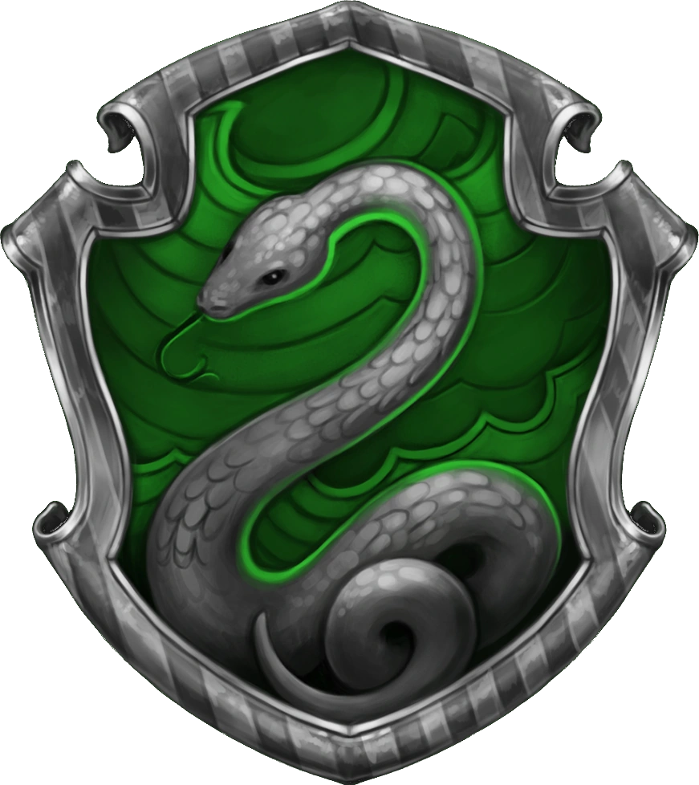
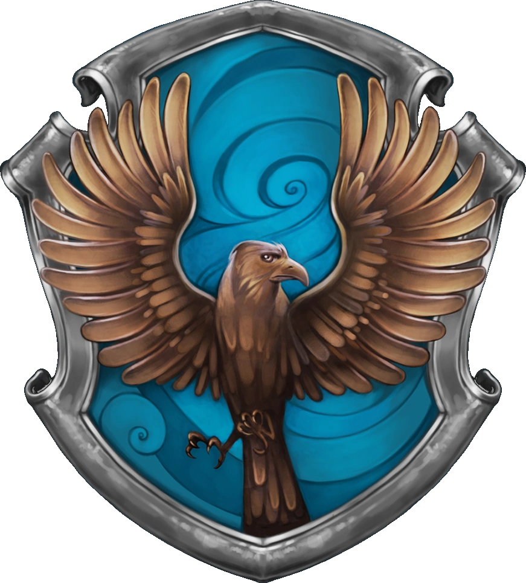

Gran Salon
Una lectura del castillo a traves de sus casas
Hogwarts no se recorre igual desde todas las casas. Cada una colorea la experiencia con un tono propio: valor, ambicion, curiosidad o constancia.
La casa elegida en Hogwarts Legacy cambia la primera lectura del castillo: la sala comun, la energia de los pasillos y el modo de entrar al mundo magico se sienten distintos para cada linaje.
El Sombrero Seleccionador espera tu afinidad magica.
Pulsa una casa para guardarla y ver como Hogwarts responde con una lectura distinta del castillo.
El castillo cambia de matiz segun la casa que lleves: no es solo una eleccion, es otra forma de mirar Hogwarts Legacy.
Su energia es inmediata: responde con coraje, empuja la exploracion y le da al castillo una lectura mas heroica.
La casa del salto al vacio, del impulso y del valor que no espera permiso.

En Hogwarts Legacy su presencia sugiere estrategia, lectura cuidadosa del entorno y una manera mas calculada de avanzar.
Es la casa de quienes convierten la ambicion en metodo.

La lectura de Ravenclaw favorece la observacion, los detalles ocultos y la resolucion de misterios dentro del castillo.
La casa de la curiosidad y las rutas que solo descubre quien mira con paciencia.
Su identidad se sostiene en la lealtad, la calma y el trabajo constante, una presencia que da equilibrio al recorrido por Hogwarts.
La casa que hace sentir que el castillo tambien puede ser refugio.
El castillo no se ve igual desde todas las miradas. La casa elegida cambia la sensacion de pertenencia, el ritmo de la aventura y la manera en que Hogwarts Legacy cuenta su historia.